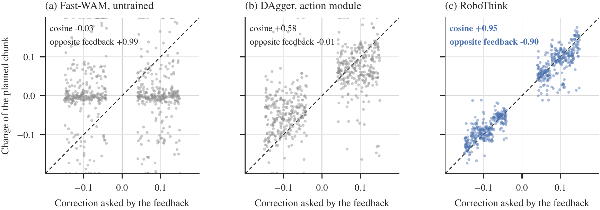
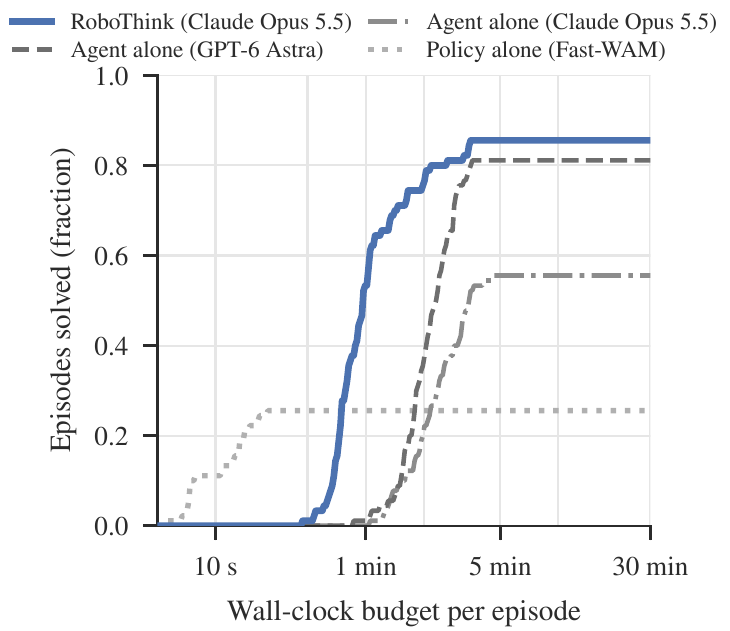
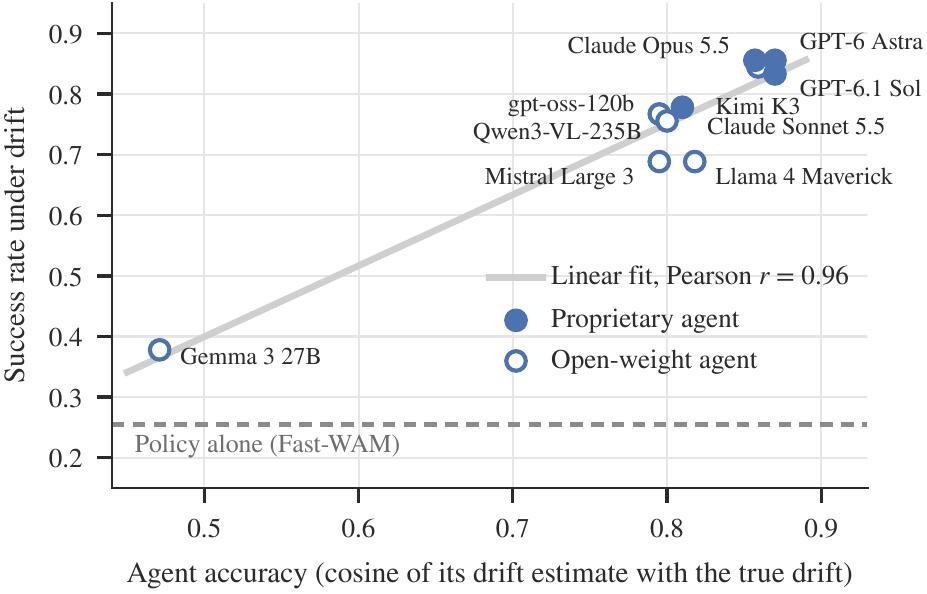

Abstract
Robot policies act in real time but fail without knowing why, whereas a reasoning agent that watches the robot can often tell what went wrong. Handing the agent control takes minutes per episode, and an instruction neither restarts a half-finished task nor fixes how the robot moves. In RoboThink the agent thinks and the policy acts. An instruction channel tells the policy what to do, with no training. A feedback channel tells it how to move; it is taught from the agent alone with agent-labelled DAgger, role tokens and counterfactual feedback, and is read only by the policy’s action module.
On LIBERO, RoboThink with Claude Opus 5.5 raises success from 0.09 to 0.87 under an unknown constant drift and from 0.42 to 0.84 under a random one, in 55 s per success, where GPT-6 Astra acting alone needs 2.1 min. It completes misheard and changed requests in 0.91 to 1.00 of the episodes, carries over to other policies and robots, and grows stronger with a stronger agent, without retraining.
From taking over to thinking along
(a) The agent takes over
Agents that act as the policy control the robot through code, so every motion waits for the agent to think. It works, but slowly: acting alone, GPT-6 Astra needs 2.1 min and over a million tokens per successful episode.
✗ Acts itself, slowly. 2.1 min per success.
(b) The agent instructs
The agent sends a new instruction and the policy acts on it. Yet a policy follows a new instruction only from a fresh start, since a half-finished task leaves it in states outside its training data. Nor can an instruction fix how the robot moves: “push right, slightly” is not a task the policy has learned.
✗ From a fresh start only. It cannot say how to move.
(c) RoboThink
The agent thinks and the policy acts. [INST] tells the policy what to do: the agent rewrites the instruction, and the robot first undoes its own motion, with no training. [FB] tells it how to move: it is taught from the agent alone and read only by the action module, while the world module keeps the plain instruction.
✓ The agent thinks, the policy acts. 55 s and 8k tokens per success.
Teaching the policy to listen
A policy does not follow “push right, slightly” on its own: it reacts to the presence of the text, not to what it says. We teach it from the agent alone, in three stages.
1. Rollouts
On the training tasks, a drift pulls the hand away. After chunks 1, 2 and 3 and then every four chunks, the agent estimates the drift δk and says it as feedback. The robot executes its own plan corrected by the estimate, ak − δk, and every step is stored with the feedback in force.
2. Training samples
Each state appears with three feedbacks: the agent’s, with target ak − δk; a counterfactual one from another drift δ (p = 0.5), with target ak − δ; and none (p = 0.1), with the plain plan. Only reading the feedback fits them all. The true drift is never used.
3. Fine-tuning
Only the action module and the role tokens are trained, with the policy’s own loss. The world module stays frozen and keeps the plain instruction.

Thinking along beats acting alone
On the same episodes under an unknown drift, RoboThink succeeds at least as often as the agents acting alone, in a fraction of their time and tokens. The agent is called only a few times per episode, and between calls the policy acts at its own rate.
| Constant | Random | Time | Tokens | |
|---|---|---|---|---|
| LIBERO, one arm | ||||
| Policy alone (Fast-WAM) | 0.09 | 0.42 | 11 s | 0 |
| Agent alone (GPT-6 Astra) | 0.78 | 0.84 | 2.1 min | 1.2 M |
| Agent alone (Claude Opus 5.5) | 0.53 | 0.58 | 2.3 min | 759 k |
| RoboThink (Claude Opus 5.5) | 0.87 | 0.84 | 55 s | 8 k |
| RoboTwin 2.0, two arms | ||||
| Policy alone (Fast-WAM) | 0.07 | 0.30 | 18 s | 0 |
| Agent alone (GPT-6 Astra) | 0.45 | 0.36 | 4.2 min | 2.8 M |
| Agent alone (Claude Opus 5.5) | 0.30 | 0.20 | 3.7 min | 1.1 M |
| RoboThink (Claude Opus 5.5) | 0.73 | 0.48 | 33 s | 10 k |


- What to do. With [INST] and undo before redo, misheard and changed requests are completed in 0.91 to 1.00 of the episodes, also by Cosmos Policy off the shelf.
- Two arms, all 50 tasks. Under the official RoboTwin 2.0 protocol, success rises from 0.12 to 0.74 under the constant drift and from 0.31 to 0.56 under the random one, with no cost without drift.
- Other policies and robots. The same recipe teaches a VLA (GR00T N1.7: 0.02 to 0.53 and 0.24 to 0.70) and a mobile manipulator in unseen kitchens (Cosmos Policy on RoboCasa).
BibTeX
@article{zhang2026robothink,
title = {RoboThink: Let the Agent Think, Let the Policy Act},
author = {Zhang, Yunbei and Jin, Zijian and Wang, Janet and Zhao, Xingchen
and Zhang, Zhenyu and Ye, Weirui and Du, Yilun},
journal = {arXiv preprint},
year = {2026}
}